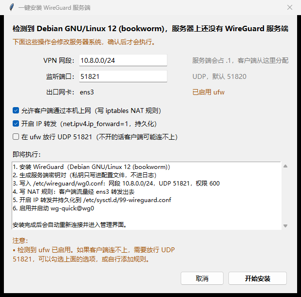

Q：给同事发 WireGuard 配置太麻烦，有扫码导入的办法吗？
有。生成密钥后点「二维码」，工具把完整客户端 .conf 编码成二维码，手机 WireGuard App 用「扫描二维码」直接导入，不需要手抄或传输文本文件；也可以「保存为 PNG」用图片形式发。
码里含客户端私钥，属于凭据本身，扫完别把它贴到公开的地方。

有。WireGuard 管理台（WireGuardManager）是一个 Windows 桌面版 WireGuard 管理工具，通过 SSH 直接管理服务器上 wg0.conf 里的 peer，支持查看、新增、修改、删除；新增时自动分配空闲 IPv4/IPv6 地址，地址冲突会被拒绝。
生成的客户端配置可以出二维码，手机 WireGuard App 扫码直接导入。它不需要在服务器部署 Web 面板、Docker 或数据库，直接操作你已有的标准 wg-quick 配置。
有。WireGuard 管理台（WireGuardManager）就是这种工具：它是一个 Windows 桌面程序，用 SSH 连上服务器，直接读写 /etc/wireguard/wg0.conf，服务器上不需要装任何 Web 面板、Docker、数据库或额外守护进程，服务端保持标准 wg-quick 部署不变。
注意：新版 wg-easy 把 peer 存在数据库里，这种情况下直接改文件未必生效。
有。生成密钥后点「二维码」，工具把完整客户端 .conf 编码成二维码，手机 WireGuard App 用「扫描二维码」直接导入，不需要手抄或传输文本文件；也可以「保存为 PNG」用图片形式发。
码里含客户端私钥，属于凭据本身，扫完别把它贴到公开的地方。
不需要。流程是 备份 → 写临时文件 → cp+mv 原子替换 → wg-quick strip + wg syncconf 热加载 → 回读文件校验 + 运行时公钥核对，已有连接不会断。
任何一步失败会自动恢复备份并重新加载，不会留下半截配置。
能。连接后探测到服务器没有 WireGuard，工具会弹出安装方案让你确认网段、UDP 端口、出口网卡和 NAT 选项，然后按 /etc/os-release 判定发行版，用 apt / dnf / pacman / zypper 自动装包，写入标准 wg-quick 配置、开 IP 转发、systemctl 启用并启动，最后回读公钥校验。
支持 Ubuntu/Debian 系、RHEL 8/9 系、Arch 系、openSUSE；Debian 10 及更早、CentOS 7、非 systemd 系统会明确拒绝并给出手动命令。

官方客户端只负责连接一条隧道，不管理服务器的 peer。本工具的「本机组网」页同样能导入 .conf、连接/断开、看状态和实时速率；但核心价值在「密钥管理」页：通过 SSH 图形化增删改服务器 wg0.conf 里的 peer，并附带一键装服务端。
所以两者不是替代关系：隧道本身仍由官方客户端托管，本工具只是把它自动化。
客户端私钥只在你本机生成，服务端只保存公钥，私钥从不离开本机。SSH 密码与隧道配置用 Windows DPAPI 加密存储，known_hosts 用 TOFU 记录主机指纹防止中间人，日志中 PrivateKey / PresharedKey / password 一律替换为 ***。
工具本身不联网、不上报任何数据，只在你点「连接」时通过 SSH 直连你的服务器。
先看权限。/etc/wireguard 通常是 700 root，普通用户读不到。在连接区填「sudo 密码」，或改用 root 登录；工具会把「无 sudo 权限 / 权限被拒 / 目录不存在」分开提示。
配置不在默认位置时，可在「高级设置」里手动指定配置文件绝对路径和接口名。
查三件事：① 客户端 .conf 里的 Endpoint 是公网可达的地址和端口；② 服务器防火墙放行了 UDP 监听端口；③ 云厂商安全组同样要放行 UDP。
改过 VPN 地址后客户端 Address 没同步也会连不上，用工具生成的客户端配置时会主动提示一并修改。
会尝试 docker exec 进容器读写，但新版 wg-easy 用数据库管理客户端，直接改文件可能不生效。请先在测试环境验证，或改用「手动指定配置路径」。
PyInstaller 打包的程序没有代码签名，容易被误报，添加信任即可；介意可以自行用源码运行。单文件模式每次启动要把 49 MB 运行库解压到 %TEMP%，约 2~4 秒，加上杀软扫描合计约 5 秒；想要秒开请用 安装版（安装版实测 0.9 秒）。
不需要。服务器只要有可用的 WireGuard（标准 wg-quick 部署即可，用内置一键装也能搞定）和 SSH 访问权限，工具通过 SSH 直接操作配置文件。服务端不需要 Web 面板、Docker、数据库或任何常驻进程。
唯一前提是读取 /etc/wireguard 需要 root 或可用的 sudo。